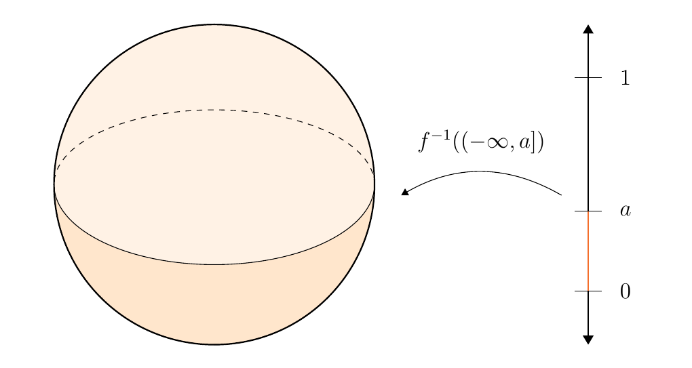
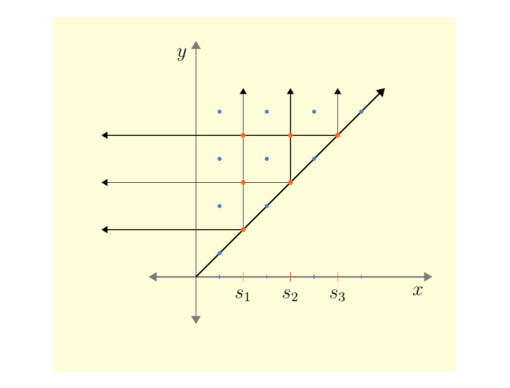

11.4. General Persistence Diagrams
Persistence diagrams (and barcodes) give a visual representation of how a filtration of a topological space (usually a simplicial complex) evolves. It keeps track of homological dimensions which are "born" and "killed" throughout this evolution.
Let \(X\) be a topological space. We know from algebraic topology that there exists a \(n\)-th singular homology group
Suppose that \(f: X \to \mathbb{R}\) is a real-valued function. An example of this is the height function of a sphere centered at the origin. Now one thing we can do with these types of functions is take any \(a \in \mathbb{R}\) and consider
The space \(f^{-1}((\infty,a]) \subset X\) is a topological space induced by the subspace topology of \(X\). In general, this process can be modeled functorially. Let \(\mathbb{R}\) be a category with morphisms given by poset structure. Then
since if \(a \le b\) then this induces a continuous function
namely, the inclusion function. \textcolor{NavyBlue}{We denote the functor as \(E\) for "evolution," as this functor filters the space \(X\). As we send \(a\) to infinity, we ultimately obtain the entire topological space.}
Switching focus, consider the homology group of this subspace
We can also outline this behavior as functorial where we send
since for any \(a \le b\), we have a group homomorphism which we denote as \(\phi_a^b\):
Now we can outline this overall data pipeline as a functor \(H \circ E: \mathbb{R} \to **Ab**\)
What's really happening here? First, \(E\) records the evolution of the topological space under \(f: X \to \mathbb{R}\). Then \(H\) records the homology groups; overall, \(H \circ E\) records the topological evolution! We are thus interested in the following objects.
Let \(a \le b\). Recall that
Since we are interested in the image of these mappings, which will be a group, we denote
to be a persistence homology group from \(a\) to \(b\).
For a persistence homology group \(F([a, b])\), define the Betti number from \(a\) to \(b\) as
In most nice topological spaces, the homology doesn't change much through its evolution. That is, as we move from \(a\) to \(b\), the persistence homology groups \(F_a^b\) don't change much.
For example, if \(f: X \to \mathbb{R}\) is the height function and \(X\) is a sphere, the topology will not change until we get from one pole to the other.

\textcolor{NavyBlue}{What does it mean for the topology to change in this context}? It means that we were at some value \(a\), but then at \(a +\epsilon\) the homology became different. This means that
is not an isomorphism. Finding out when the homology does change is valuable information, so we keep track of these points.
A critical value of \(f: X \to \mathbb{R}\) is an \(a \in \mathbb{R}\) such that there exists an \(\epsilon > 0\) such that
is not an isomorphism. The function \(f\) is called tame if \(f\) has finitely many critical values. \
Let \(f: X \to \mathbb{R}\) be a tame function. Then we have finitely many critical values \(\{s_1, s_2, \dots, s_n\}\). Let \(\{t_0, t_1, \dots, t_{n}\}\) be any interleaved sequence of numbers such that \(t_{i-1} < s_i < t_{i}\). We will see soon why such a choice has much freedom in it. Now append to this sequence \(t_{-1} = s_0 = -\infty\) an \(t_{n+1} = s_{n+1} = \infty\).
We are now ready to define persistence diagrams. \ \
Let \(f: X \to \mathbb{R}\) be tame and \((s_i, s_j)\) be a tuple of critical values. Then we define the multiplicity of \((s_i, s_j)\) to be
The persistence diagram of the tame function \(f: X \to \mathbb{R}\) \(D(f)\) is the multiset of tuples \((s_i, s_j)\) each with multiplicity \(\mu_i^j\). Alternatively,

Persistence diagrams consist of points in \(\rr \times \rr \cup\{\infty\}\) above the diagonal \(y = x\). Thus let \(**Dgm**\) be the category of half open intervals \([p, q)\) with \(p < q\) and intervals of the form \([p, \infty)\).
In what follows, let \(S = \{s_1, s_2, \dots, s_n\}\) be a finite set of real numbers, and let \((G, +)\) be an abelian group with identity \(e\).
A map \(X: **Dgm** \to G\) is \(S\)-constructible if for every \(I \subset J\) where
we have \(X(I) = X(J)\). The motivation for defining this type of function arises from the rank function
Suppose that our critical points are \(S = \{s_0, s_1, s_2, s_3\}\) and that we have two intervals \(I = [a, b]\) and \(J = [c, d]\) such that \(I \subset J\) and \(I \cap S = J \cap S\).
Clearly in this case we have that \(I \cap S = J \cap S\). Now observe that
since these intervals observe the same changes in rank.
\textcolor{NavyBlue}{Therefore, we see that the rank function for a tame function \(f: \mathbb{R} \to X\) is \(S\)-constructible.}
A map \(Y: **Dgm** \to G\) is \(S\)-finite if
Alternatively, this states that
which is probably a better way of thinking about this.
This leads to the following definition:
A persistence diagram is a finite map \(Y: **Dgm** \to G\).
The motivation for this is due to the persistence diagram. Given a persistence diagram, we can extend it to a mapping
where \(a_1 \le a \le a_2\) and \(b_1 \le b \le b_2\) are values within some sufficiently small neighborhood of \(a\) and \(b\). Note that in this extension, if \([a, b) \ne [s_i, s_j)\) or \([s_i, \infty )\) in, then each \(\beta_{a_i}^{b_j}\) is of full rank, so that
Hence we see that the persistence diagram is \(S\)-finite where \(S\) is the finite set of critical values.
We now want to invent a distance between persistence diagrams. To do so, we must first denote \(G\) as not only an abelian group, but one with a translational invariant partial ordering \(\le\). What we mean by that is if \(a \le b\) then \(a + c \le b + c\) for any \(a, b ,c \in G\).
Consider \(Y_1, Y_2: **Dgm** \to G\) be a pair of persistence diagrams. We say there exists a morphism \(\phi: Y_1 \to Y_2\) if
for all \(I \in **Dgm**\).
Note the above sums are finite.
\textcolor{NavyBlue}{Observe that if \(\phi: Y_1 \to Y_2\) and \(\phi': Y_2 \to Y_3\), then we can define the unique morphism \(\phi' \circ \phi : Y_1 \to Y_3\). Therefore, this morphism relation establishes a reflexive, transitive ordering on our persistence diagrams.} Thus we can consider the category of persistence diagrams \(**PDiag**(G)\) into the group \(G\) where the objects are persistence diagrams \(Y: **Dgm** \to G\) and morphisms as described above. As we stated before, these morphisms make this category into a partial ordering.
Define the mapping
Now consider a pair of persistence modules \(Y_1, Y_2: **Dgm** \to G\). Since they are persistence modules, we know by definition that they are \(S_1\) and \(S_2\)-finite for some finite sets \(S_1, S_2\). With that said, observe that \(Y_1 \circ **Grow**_\epsilon, Y_2 \circ **Grow**_\epsilon: **Dgm** \to G\) are again persistence modules since they \(S_1'\) and \(S_2'\) finite, where\dots
Therefore, we have an endofunctor on our category of persistence modules.
Note that for any persistence modules \(Y: **Dgm** \to G\), we have that \(\nabla_\epsilon(Y) \to Y\) since for any interval \(Y\),